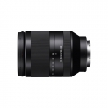

器材库 > 35mm画幅AF变焦镜头 > FE 24-240/3.5-6.3 OSS

详细规格
发布日期
2015-03-04
厂家推荐价格
6,199.00 （人民币）
焦距
24-240mm
等效35mm画幅焦距
36-360mm
最大光圈
f3.5-6.3
最小光圈
f/22-40
镜头结构
17片/12组
非球面镜片
5片
低/超低色散镜片
1片
光圈叶片
7片
最近对焦距离
约0.27cm, 微距约50-80cm
滤镜口径
72mm
防抖
是
颜色
黑色
尺寸
约80.5-118.5mm
重量
约780g
matthewzhao2015-06-25 13:444.58 分
操作性 5.00耐用性 5.00性价比 5.00解像力 4.00色彩还原 4.50机械结构 4.00
卜木又寸2015-04-11 18:574.67 分
操作性 5.00耐用性 4.50性价比 4.50解像力 4.50色彩还原 4.50机械结构 5.00
wuping82015-03-23 16:544.67 分
操作性 4.50耐用性 4.50性价比 5.00解像力 4.50色彩还原 5.00机械结构 4.50
RX2002015-03-19 22:034.58 分
操作性 4.50耐用性 4.50性价比 5.00解像力 4.50色彩还原 4.50机械结构 4.50